越南珍寺劇場、お次の舞台はシンガポールである。
ベトナム編なんだからベトナムだけにしておけよ。面倒くせえなあー、だから皆に煙たがれるんだぞ！
…的な至極ごもっともな御忠告を有難く拝領しつつも、謹んでガン無視させていただく次第でございます。
単にリトルインディアで旨いカレーが食いたかったんだよお〜。
…てなわけで10年ぶりに訪れたシンガポールは相変わらずクリーンで毒気のない街だった。
ちなみに以前のレポートはこちら

とりあえずニュースポットに行ってみる。
ガーデンズバイザベイ。
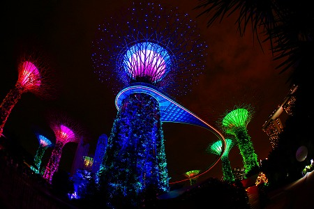
巨大な人工の樹木が林立する植物園だ。
王道観光地にはやや辛口な当サイトだが（そうだったの？）、ココは異次元っぽくて中々面白かったです。
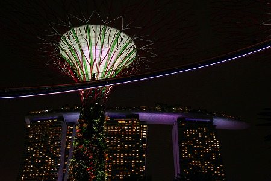
向かいにはこれまた有名なマリーナベイサンズ。
そう言えばSMAPがここでソフトバンクのCM撮ってたよなあ〜、などと感慨にふけってしまった（訪問当時SMAP解散直後だったゆえご勘弁いただきたい）。
てなわけでリトルインディアでたらふくカレーを食し（個人的な偏見だが、シンガポールのインド料理は多分インドより美味いのだ！）、あとやる事といえばあそこに行くだけ。
そう、シンガポール最狂のテーマパーク、ハウパーヴィラである。
超絶のコンクリガーデンである。
よくシンガポール最低の観光地と称されているが、その称号はそっくりマーライオンに返上するとしよう。
もし貴方が初めてのシンガポール旅行で、半日しか時間がないのであれば迷わずこのハウパーヴィラをお薦めいたします。
で、さらに時間があったらインド人街でインド料理を食せばほぼ完璧です！あとはどうでもいいです。
ガーデンズだブリーズベイだは世界のどっかに似たようなところがあるだろうけど、ハウパーヴィラに関しては世界でここだけの虹色ザ☆クレイジーランドなのだ。
つまりおまいら最高かよ！ってことです。
…スミマセン、少し興奮してしまいました。落ち着いて参りましょう。
ハウパーヴィラは軟膏薬タイガーバームで財を成した胡文虎、胡文豹兄弟が建設した一大テーマパークだ。
仏教や道教の教えをジオラマで説く、というのが最初のコンセプトだったのだろうが、余りにも蛇足的要素が多すぎて、訳の判らない珍妙な場所になってしまった庭園だ。
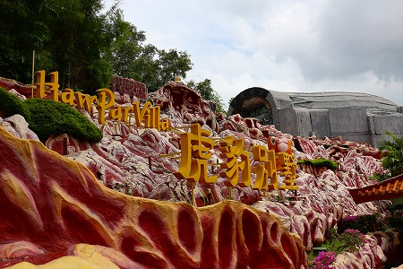
園内のほとんどはコンクリートで出来ており、特に様々な色彩がせめぎあう岩山の表現にこの庭園の尋常ならざるセンスと情熱を感じてしまうのだ。
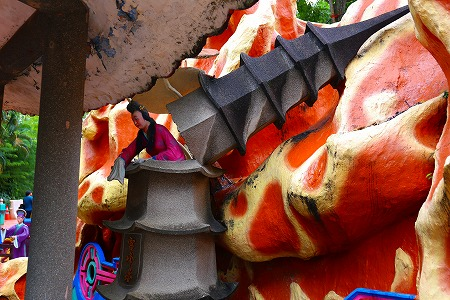
前回の訪問時にたっぷりこってりお伝えしたので詳しくは述べないが、その歪みきった素敵な世界をご堪能くだされ、
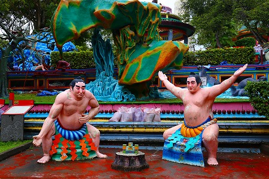
脈絡もなく力士。
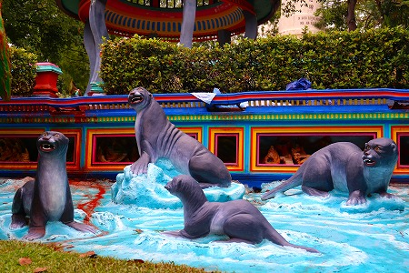
アシカ。
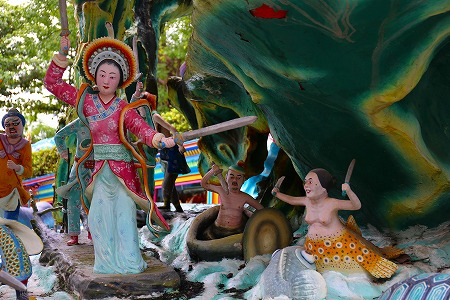
道教の寓話のいちシーンなのだが…
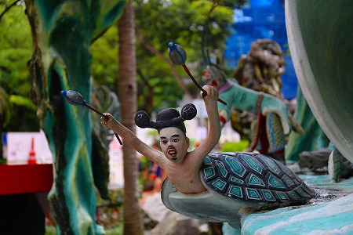
面白いところにしか目が行かないぞ。
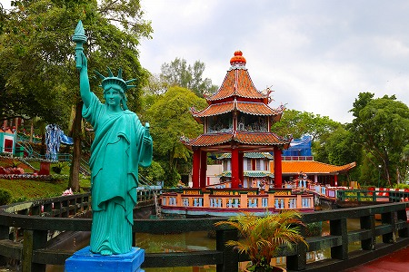
脈絡もなく自由の女神。
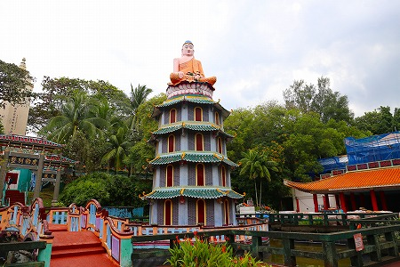
パゴダの上に佛陀。特に意味は…ないな。
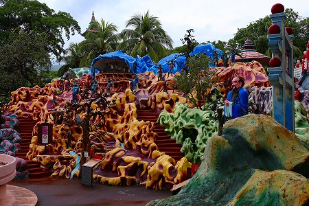
孫悟空の世界を物語るエリア。
各々のエレメントよりも黄色と茶色の色彩がせめぎあう岩山のインパクトが強すぎて登場人物が霞んでしまいます…。
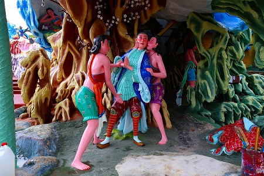
西遊記の世界。
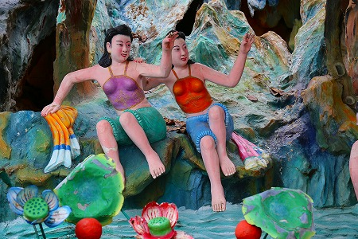
妙にエロいお姉さんが多い。
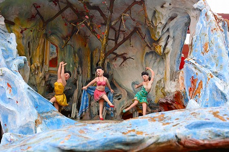
踊り子たち。昔の写真を見るとこの辺のお嬢さんたちはトップレスだったようだが、今では服が上書きされています。
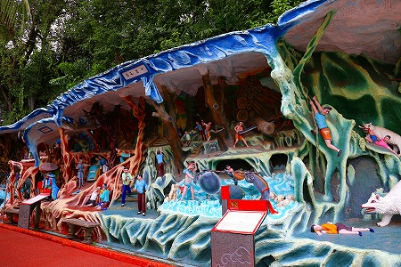
故事などから善行を説くジオラマ。
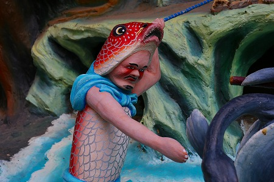
…な筈なのだが、面白いのばっかりに目が行っちゃって…。
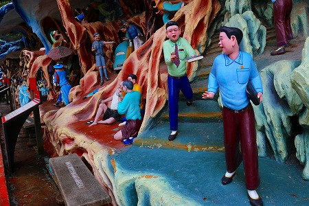
宿題イヤイヤ君。
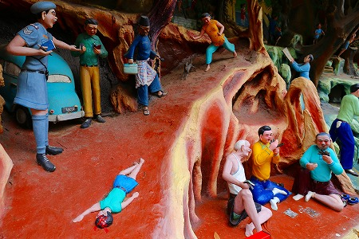
子供が死んでも博打好き。
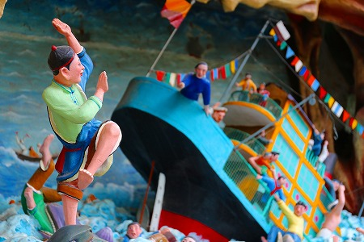
沈船から亀に助けられた人。きっと良い事してたんでしょうねえ。
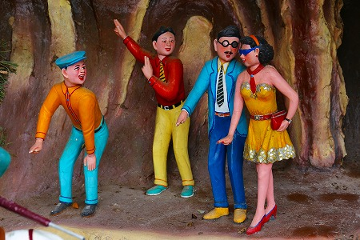
上海バンスキングの世界。パーマがキツイぜ。
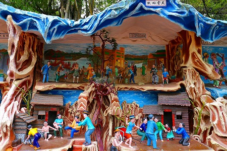
こんな二階建てジオラマが延々続く。
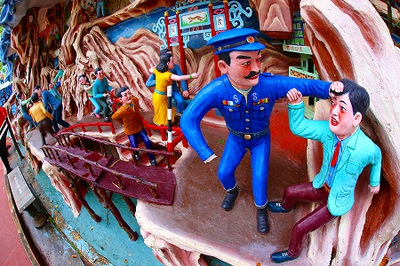
そうこうしていく内にどんどん世知辛い人間模様が…。
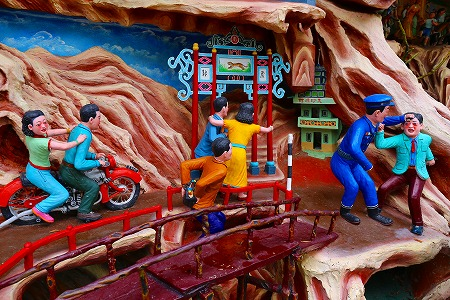
享楽と暴力の世界。
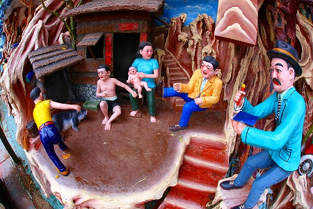
貧困と暴力。
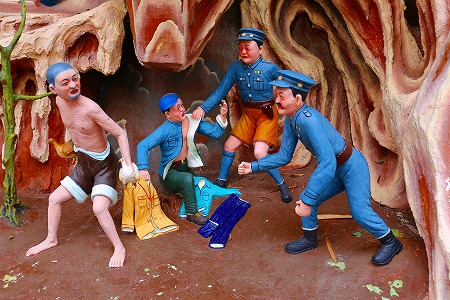
権力と暴力
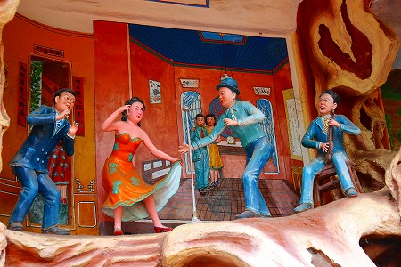
…各パートにはマレー語、中国語、英語、日本語で説明がなされている。
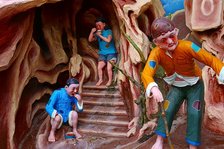
ああ、貧乏…。
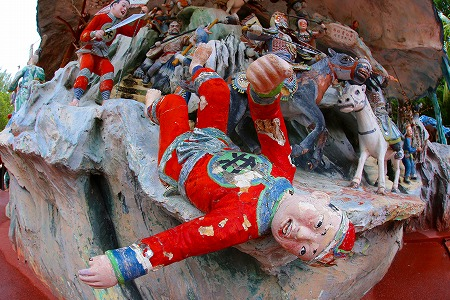
こちらは封神演義のいちシーン。
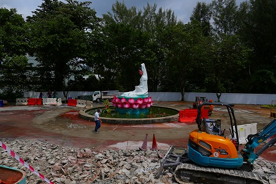
一番奥は工事中で入れなかった。
工事現場の中で観音様がポツンと座っているのが印象的だった。
事前にハウパーヴィラが大規模工事中で、中に入れないかもという情報を得ていたが、結局入れなかったのはこのエリアだけだったので、まあ良かった、良かった。
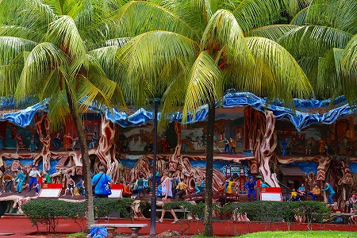
ヨーロッパ系の観光客も居たが、顔をしかめて早足に通り過ぎていってしまった。
まあ、無理もない。アナタ方はサンズベイマリーナの屋上プールでカクテル片手にくつろいでいてくれたまえ…。
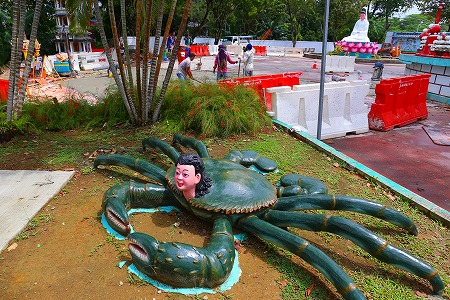
…という訳で以下、ダイジェストでお楽しみください。
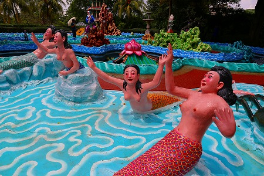
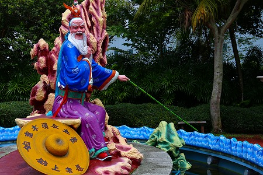
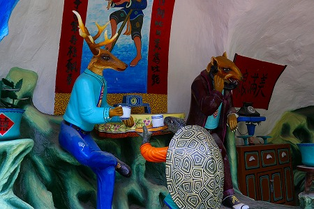
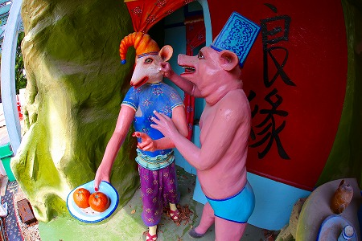
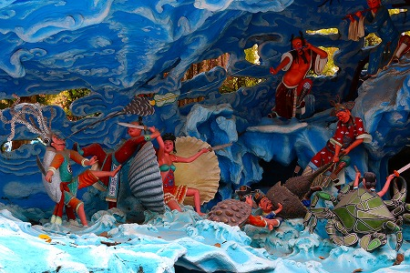
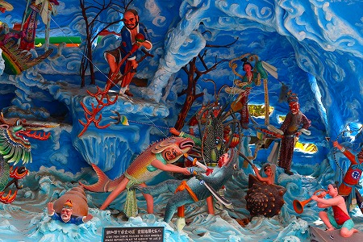
…そんなこんなで狂気の庭園をぐるりと回ってきた。
ペンキを塗り直した部分もあり、10年前の訪問時よりも状態が良くなっていた。喜ばしい限りである。
すっかり満腹なのだが、さらに先には地獄エリアが待ち構えているのだ。
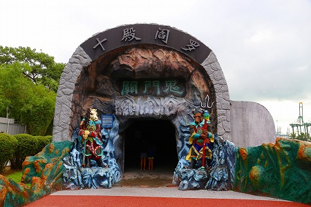
ここはトンネル状になった屋内に死後の世界を表現したジオラマが展開されている。
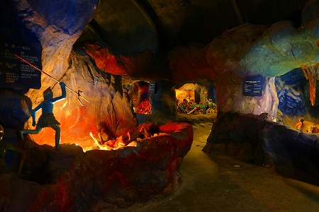
ストーリーは死後の十回の裁判に即して展開している。
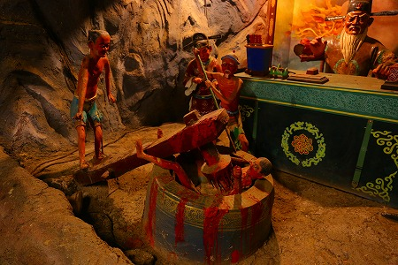
この辺、中国の道教的な死生観を如実に体現しており、十王の裁判の様子と刑の執行の様子が同時に描かれている。
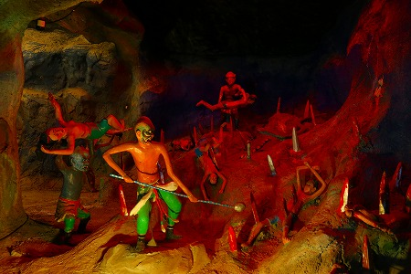
針の山。
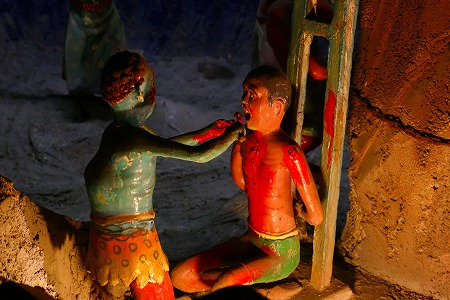
舌抜き。
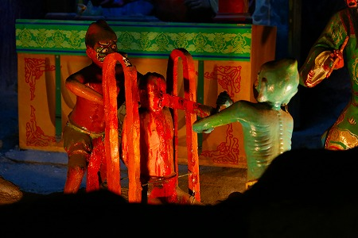
真っ二つ。
十王判断決定、男黒羊、女白兎とある。
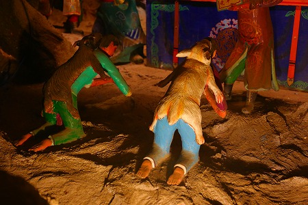
…あ、ホントだ。
早くも刑が執行されているぞ。
じっとりとした湿気のこもるトンネルの中で繰り広げられる地獄模様、見ているこちらも汗でずぶ濡れでございます。
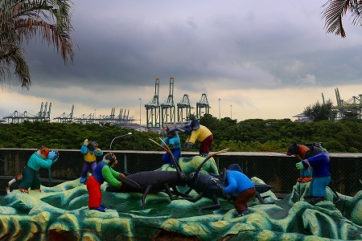
地獄を抜けるとまたしても屋外彫像の居並ぶエリア。
遠くには巨大なガントリークレーンがずらりと並び、港湾都市シンガポールを象徴するような風景が広がっている。
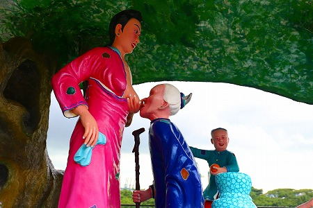
一番お気に入りの唐婦人の像。
歯の抜けた姑に乳を飲ませる、という親孝行物語なのだが、「ホレ、婆ちゃん！じゃんじゃん飲まんね！」と言っているような堂々とした授乳っぷりがなんとも清々しい。
後にいる乳児も「ホレ、ウチの母ちゃんは婆ちゃんにも乳をやっとるばい！」と妙に自慢げなところが堪らない。
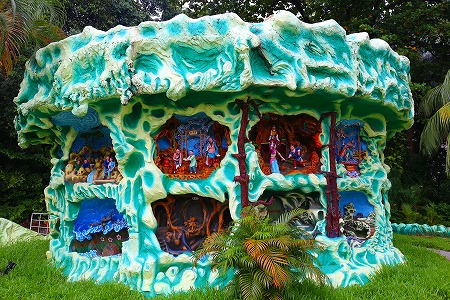
因業仕立てのデコレーションケーキ。
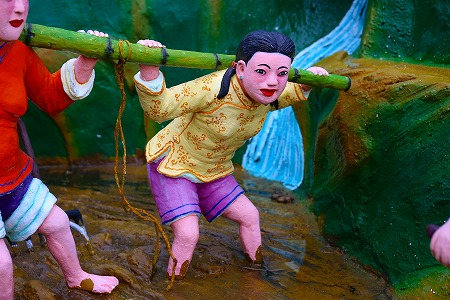
泥の中で労働する女性も若干小ぎれいになっていた。
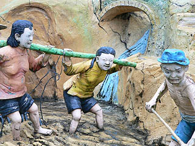
参照；10年前
一番奥にあったシアターのようなものは足場が掛けられており、解体しているのやら改装しているのやら。
そんなこんなで楽しいハウパーヴィラ鑑賞はお終い。
相変わらず時空の歪んだような世界が繰り広げられており、楽しかった。
ちなみに以前はバスを乗り継いで来た記憶があるのだが、今では地下鉄のハウパーヴィラ駅が出来て、どこからでも簡単にアクセス出来るようになった。
そこが10年前との一番の差ですかねー。
次へＧＯＧＯＧＯ！